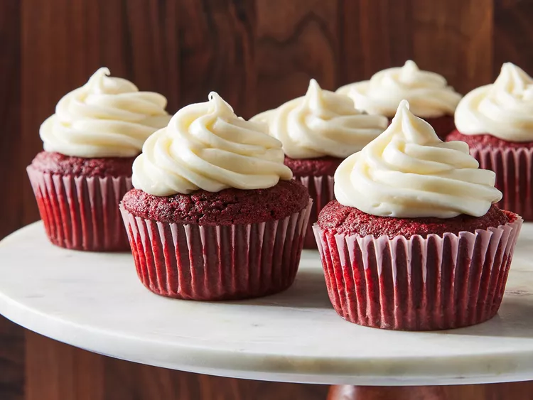

Red Velvet Cupcakes

Cake:
- 2 ½ cups flour
- ½ cup unsweetened cocoa powder
- 1 teaspoon baking soda
- ½ teaspoon salt
- 2 cups sugar
- 1 cup butter, softened
- 4 large eggs
- 1 cup sour cream
- ½ cup milk
- 1 (1 ounce) bottle McCormick Red Food Color
- 2 teaspoons McCormick Pure Vanilla Extract
Vanilla Cream Cheese Frosting:
- 1 (8 ounce) package cream cheese, softened
- ¼ cup butter, softened
- 2 tablespoons sour cream
- 2 teaspoons McCormick Pure Vanilla Extract
- 1 (16 ounce) box confectioners' sugar
Directions
- Step 1
Gather all ingredients and preheat the oven to 350 degrees F (175 degrees C). Line 30 muffin cups with paper liners.
- Step 2
Make cake: Mix together flour, cocoa powder, baking soda, and salt in a medium bowl; set aside.
- Step 3
Beat sugar and butter in a large bowl with an electric mixer on medium speed until light and fluffy, about 5 minutes. Beat in eggs, one at a time.
- Step 4
Mix in sour cream, milk, food color, and vanilla.
- Step 5
Gradually beat in flour mixture on low speed until just blended; do not over-beat. Spoon batter into the prepared muffin cups, filling each 2/3 full.
- Step 6
Bake in the preheated oven until a toothpick inserted into a cupcake comes out clean, about 20 minutes. Cool in the pans on a wire rack for 5 minutes. Remove cupcakes from the pans; cool completely.
- Step 7
While cupcakes are cooling, make frosting: Beat cream cheese, butter, sour cream, and vanilla extract in a large bowl until light and fluffy. Gradually beat in confectioners' sugar until smooth.
- Step 8
Spread or pipe frosting onto cooled cupcakes.